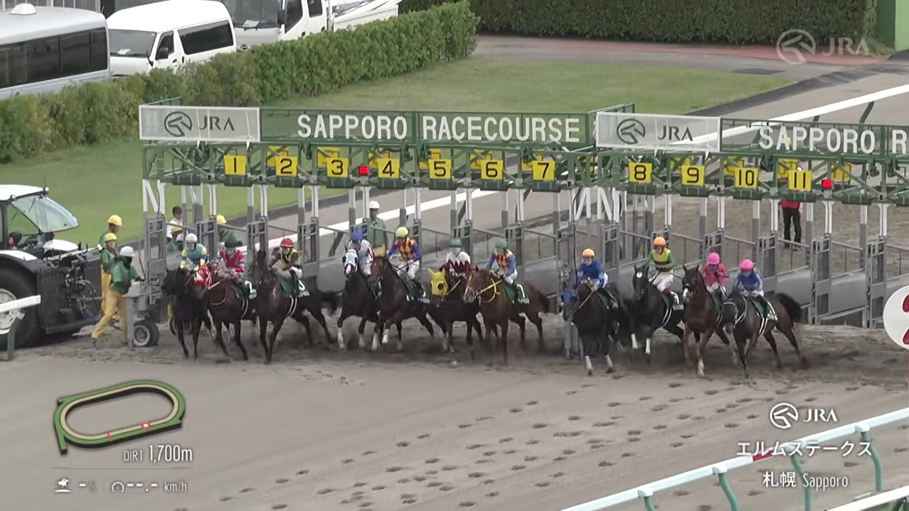
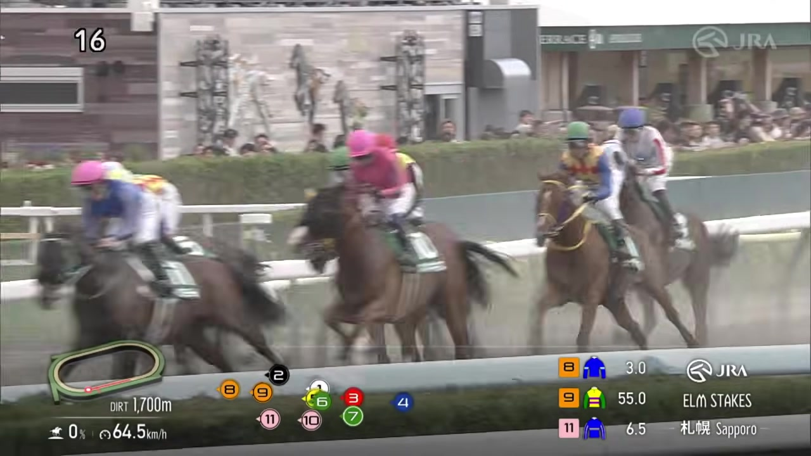
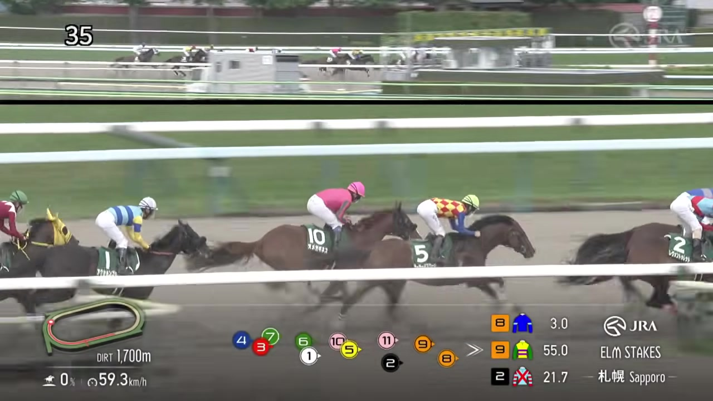
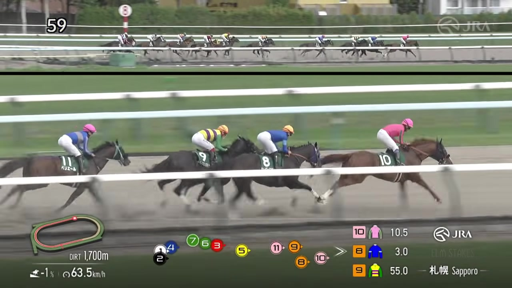
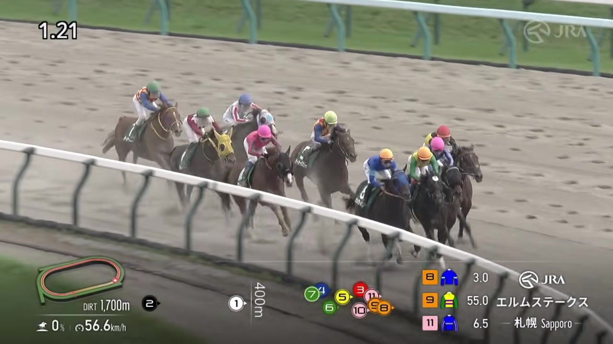
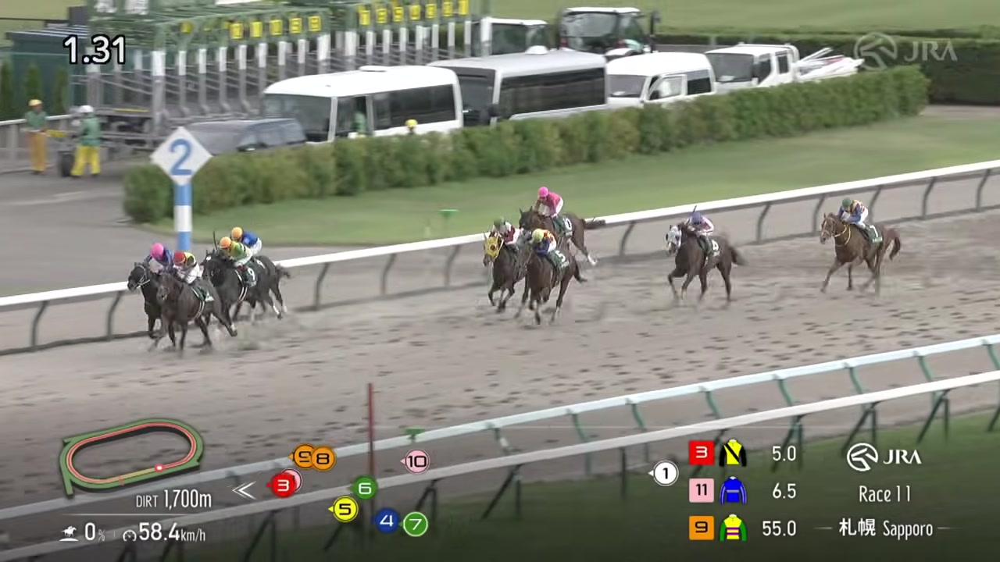
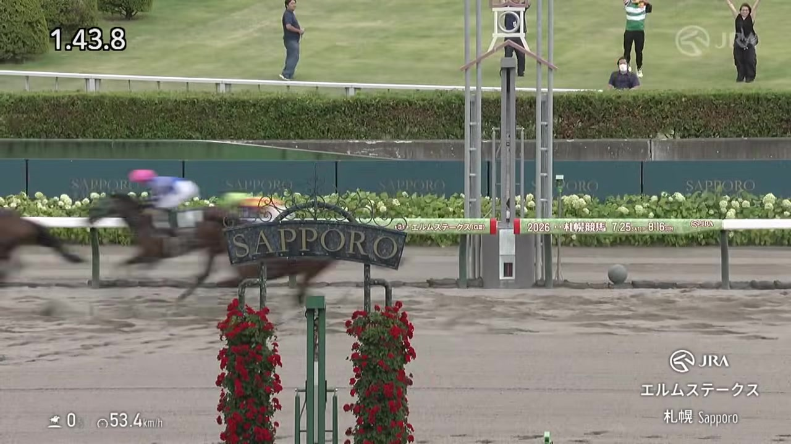

改善要望・バグ報告
カテゴリ
送信内容は開発リポジトリの課題として記録され、優先度順に改善へ回します。個人情報は書かないでください。
スタート直後に先頭へ行きたがる馬を全頭ぶん並べた表です。順番は過去に最初のカーブをどこで回ったかだけで決めており、人気・オッズ・印は使っていません。
上位が数頭いれば序盤で競り合ってペースが速くなり、上位が1頭だけなら楽に逃げて粘りやすくなります。
データが薄い馬は数値推定を出していません。
◀ 予想ページに戻る（印・買い目・全頭の評価）買い方と馬を選んで金額を入れ「買い目に追加」。下の展開シミュレーションを実行すると収支・的中率・元割れ率が出ます。オッズは想定値です。
収支は下の「展開シミュレーション」を実行すると出ます。
下の「今回の予測シナリオ」が初期値。条件を変えて再実行すれば「もし◯◯だったら」が試せます。
「人気ほど信用できない馬」と「その馬が崩れた時に浮上しそうな馬」の一覧。買えば得する話ではありません。
中位以下はデータ不足のため対象外です。
列の見出しをタップで並び替え。＋で自分の印、✎でメモを付けられます。
斤量は確定前「-」。体重は過去走の平均、上がりは自己ベスト3走の平均です。
過去10年の傾向と今回のメンバー構成をカテゴリ別に見比べます。
こちらは評価スコアではなく、過去走データから機械的に計算した数値です。
プロ予想家・メディア・関係者コメントの引用。各カードの情報源表示で重みを確かめてから使ってください。
この予想は 時点のスナップショット。以下は確定次第 v2-v4 で更新する。
事実情報（枠・騎手・血統・近走）は一次情報に基づきます。能力評価とシミュレーション結果は分析からの推定で、的中を保証するものではありません。馬券は20歳以上が自己責任の範囲で。
3番人気ルクソールカフェが直線で抜け出し重賞2勝目、単勝500円の順当決着。◎ペリエールは1馬身半差の2着で好走し、前年覇者の連覇プレミアムを軸にした本命判断は機能した。一方、1番人気の◯ウェイワードアクトは自ら逃げて直線で失速し8着に沈み、事前に注記していた調整面の懸念がそのまま的中する結果となった。
札幌・ダート1700m / 天候曇・馬場稍重 / 勝ち時計1:43.8 / 11頭立て
| 着 | 枠 | 馬番 | 馬名 | 性齢 | 厩舎 | 騎手 | 斤量 | 馬体重 | 人気 | 印 | 上り3F |
|---|---|---|---|---|---|---|---|---|---|---|---|
| 1 | 3 | 3 | ルクソールカフェ | 牡4 | 美浦・堀宣行 | 岩田望来 | 58.0 | 542(-2) | 3 | 37.1 | |
| 2 | 8 | 11 | ペリエール | 牡6 | 美浦・黒岩陽一 | 佐々木大輔 | 58.0 | 488(-4) | 4 | ◎ | 37.8 |
| 3 | 5 | 5 | テーオーパスワード | 牡5 | 栗東・高柳大輔 | 松山弘平 | 57.0 | 490(-2) | 2 | 37.5 | |
| 4 | 4 | 4 | ナチュラルライズ | 牡4 | 美浦・伊藤圭三 | 横山武史 | 59.0 | 500(0) | 5 | △ | 37.6 |
| 5 | 6 | 6 | ヴァルツァーシャル | 牡7 | 美浦・高木登 | 斎藤新 | 57.0 | 500(-8) | 7 | ▲ | 38.0 |
| 6 | 6 | 7 | テーオードレフォン | 牡7 | 栗東・梅田智之 | 古川吉洋 | 57.0 | 498(0) | 11 | 37.9 | |
| 7 | 7 | 9 | ヒルノハンブルク | 牡4 | 栗東・武英智 | 池添謙一 | 57.0 | 472(+4) | 10 | 39.3 | |
| 8 | 7 | 8 | ウェイワードアクト | 牡6 | 美浦・田中博康 | 舟山瑠泉 | 57.0 | 542(+2) | 1 | ◯ | 39.9 |
| 9 | 8 | 10 | オメガギネス | 牡6 | 栗東・安田翔伍 | 岩田康誠 | 57.0 | 498(+2) | 6 | ☆ | 41.2 |
| 10 | 2 | 2 | レヴォントゥレット | 牡5 | 栗東・矢作芳人 | 北村友一 | 57.0 | 494(+2) | 8 | △ | 42.7 |
| 11 | 1 | 1 | アクションプラン | 牡6 | 美浦・池上昌和 | 浜中俊 | 57.0 | 506(-6) | 9 | 43.4 |







| 馬場 | 予想: 小雨・稍重、前有利想定 結果: 稍重は的中したが前有利にはならず。早めに先頭に立ったウェイワードアクトとオメガギネスは、ともに終いで失速した。差しと好位の勢いが上位を占め、1着ルクソールカフェ(上り37.1)、2着ペリエール(37.8)。 |
|---|---|
| 印判定 | 予想: ◎○▲☆△△の6頭 結果: ◎ペリエールが2着、▲ヴァルツァーシャルも5着で掲示板僅差。◯ウェイワードアクトは8着に大敗、☆オメガギネスも9着。勝ち馬ルクソールカフェは採点対象外で無印だった。 |
| 買い目 | 予想: 馬連◎→○5テーオーパスワード▲△、ワイド◎→▲△△、3連複BOX(◯▲☆・◎抜きヘッジ) 結果: 全て不的中。2着相手が無印3番だったため、◎の的中(2着好走)を買い目に活かせなかった。 |
前年のエルムS覇者で札幌ダ1700は2戦2勝。近走不振は近走の内容の軸で減点しつつ、コース実績・馬場適性・連覇プレミアム(R12)を軸に本命へ据えた判断が、1馬身半差の2着という結果でほぼ機能した。プロ予想家(Winsight田原基成氏)も同じ「リピーター」ロジックで本命に選んでおり、独立した視点からの評価一致もあった。
1番人気だったが自ら逃げて直線で失速。事前スコアカードの仕上がりの軸には「調教師がバランス調整の難しさに言及」との注記が既にあった。騎手の軸も札幌ダ1700での相性の悪さ(複勝率0%)から、信頼度1点と低く評価していた。レース後の舟山瑠泉騎手のコメント「調整が難しくて、うまくできませんでした。バランス面とかが悪くなっていました」は事前の懸念と一致しており、◎にせず◯止まりにした判断は結果的に正しかった。
3着とクビ差の5着で掲示板僅差。単穴評価どおりの水準は出した。
3コーナーで自ら先頭に立つ積極策に出たが、直線で一杯になり9着。穴狙いの脚質評価が展開面で裏目に出た。
スタートで最後方に下がりながら4着まで押し上げた。掲示板には届かなかったが崩れはしなかった。
2番手追走から後退し大差の10着。連下評価は結果に結びつかなかった。
3番人気で完全優勝。前走が芝の安田記念11着で、斤量58kgも今回最重量という材料から採点対象外に据え置いていたが、ダート復帰即巻き返した。前走4角14番手という位置取りの悪さも各予想サイトで不利要因視されており、当方だけの見落としではなかった。
ウェイワードアクトは「好スタートから逃げを仕掛けたが、直線で脚が切れた」と報道。舟山瑠泉騎手「調整が難しくて、うまくできませんでした。バランス面とかが悪くなっていました」とコメント。
ルクソールカフェは「ダートに戻って快勝」、堀宣行厩舎の重賞2勝目。武蔵野S以来チャンピオンズC15着・サウジC5着・安田記念11着と不振が続いていたが、ダート回帰で復活。
ペリエールを本命に選定。「昨年のエルムS勝ち馬で札幌ダ1700実績あり」という同じ連覇ロジックで、当方の◎判断と独立に一致した。ルクソールカフェは「外めの枠がベストで3列めまで」と3番手評価にとどめていた。
マリーンS組の4・5歳馬が好調という過去10年データからウェイワードアクト・テーオーパスワードを重視。ルクソールカフェは「前走4角14番手」を不利要因に挙げ評価を下げていた。
| 進行段階未更新でR39ゲート不発 | 品質ゲートのR39系チェック(上位人気馬が採点対象外未採点のまま残っていないか)は進行段階が「枠順確定」「発走前」「事実修正済み」のときだけ動く。本レースは枠順・オッズが確定していたのに進行段階が「最終追い切り」のまま最後まで更新されず、ゲートが一度も走らないまま3番人気ルクソールカフェが無印優勝した。運用反映の抜けを機械チェックで検知できなかった構造的な穴。 |
|---|---|
| 芝→ダート復帰馬の巻き返しを評価軸が拾えない | 横断レビューの枠組みは前走が90日超前(休養明け警告)の馬にのみ適用され、直近走が新しくても芝⇄ダートのサーフェス変更で評価を下げるケースは対象外。ルクソールカフェは前走が芝(安田記念11着)だったが、この仕組みでは拾えなかった。 |
| ◎○▲の相対順位は機能・買い目配分が拾えず | ◎ペリエール2着・▲ヴァルツァーシャル5着と印の相対評価自体は的中に近かったが、馬連・ワイドの相手に無印3番を含めていなかったため全券種不的中。相手選定を無印上位人気馬まで広げる余地があった。 |
着順・配当・馬体重は netkeiba 結果ページの一次情報。舟山瑠泉騎手コメントはnetkeibaニュース記事からの引用。3ソース回顧はウェブ検索で取得した公開記事に基づく。